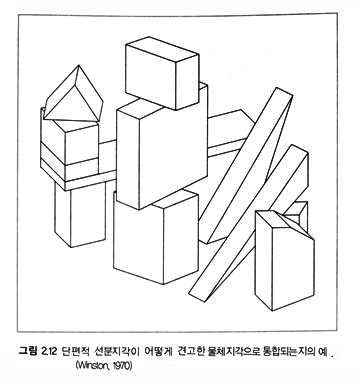
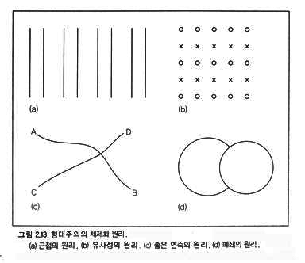
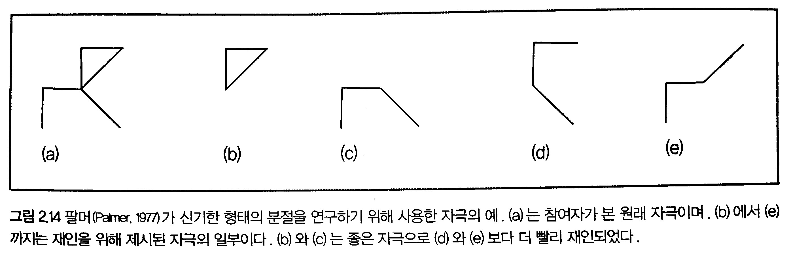
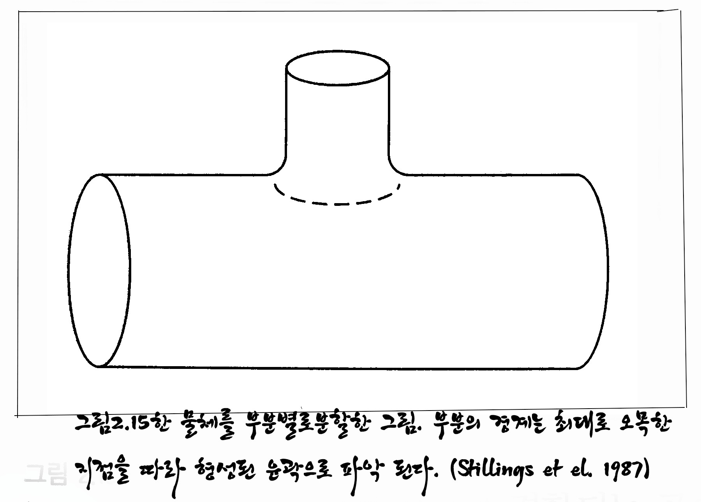

사진과 씨름하는 햇수가 늘어날수록 사진에 대한
고민은 더욱 깊어지고, 반반하게 내놓을 만한 것도 없이
그저 세월만 쌓아가고 있는 자신이 미워지지만
스스로 다독이며 애써 평정을 찾으려 노력하고 있는 요즈음이다.
사람들은 형태를 어떻게 인지할까?
사람들은 사진에서 무엇을 볼까?
평소에 이러한 궁금증이 많았었는데
우연한 기회에 접하게 된 책 속에서
실마리를 풀 수 있게 되었다.
인지심리학 속에 들어 있는 게쉬탈트 이론은
사진을 하는 사람이면 한번쯤 접해도 좋겠다는 생각에서
요점이 되는 부분들을 정리하였으며,
짧은 시간이나마 본 내용을 디지털 사진가 협회
대구지부에서 강의하게 되어 본인에도 많은 도움이 되었다.
인지심리학[2]
독일에서는 인지심리학은 활발한 주제였으나 나치로 인한 혼란한 상황으로 인해 그 연구가 오래 지속되지는 못했다. 몇몇 독일 심리학자는 미국으로 이민을 가면서 형태주의 심리학(Gestalt psychology)을 들여갔다.
형태주의 심리학은 뇌와 마음의 활동이 각각의 활동을 합한 것이라고 주장했는데, 이는 독일에서 활동하던 내성주의자의 프로그램과는 매우 상충되었다. 미국에서 형태주의 심리학자들은 심리 구조(mental structure)에 전적으로 관심을 가졌기 때문에 자신들이 행동주의와 갈등적이라는 사실을 알았다.
그들은 동물학습에 대한 자신들의 주장 때문에 가장 많은 주목을 받았고, 또한 행동주의자의 비판의 대상이었으나, 몇몇 형태주의 심리학자는 이름을 날렸다.
예를 들면, 형태주의 심리학자인 볼프강 쾰러는 미국 심리학회 회장으로 선출되었다. 게슈탈트 이론은 독일의 심리학자 막스 베르트하이머가 1910년 여름 기차여행을 하는 동안 영감을 얻어서 주장하게 되었다.
기차여행을 하다 보면 창 밖에 있는 멋진 풍경에 압도되어 멍하니 바라볼 때가 있다. 분명 눈앞에는 기차의 창문과 창틀로 시야가 일부 가려져 있음에도 불구하고 우리는 연속된 시야에 들어오는 바깥풍경을 전체로 보게 된다.
게슈탈트 이론에 의하면 우리의 인지기관은 형상, 배경, 집단화, 단순화와 같은 몇가지 규칙에 지배를 받는다. 그리고 이러한 규칙은 사진 구성을 이해하는데 매우 중요한 역할을 한다. 따라서 사진가는 최소한 기본적인 시각인지 효과를 이해하고 있어야 한다. 대부분의 사진구성 원칙들이 '형태'라는 의미의 게슈탈트와 밀접한 관계를 맺고 있다. 원근감, 사물의 크기, 콘트라스트, 톤, 칼러, 패턴 등의 사진적요소는 게슈탈트 이론의 핵심인 형상과 배경의 관계를 설정하는데 매우 중요한 요소로 작용한다.[2/330p]
형태주의의 체제화 원리[1/p59] 사람들은 물체를 형태주의의 체제화 원리(gestalt principles of organization)라고 하는 일련의 원리에 따라 단위로 체제화 한다.
형태주의의 체제화 원리라는 명칭은 이 원리를 처음 제안한 형태주의 심리학자들(예: Wertheimer,1912/1932/베르트하이머)에서 따온 것이다.
그림 2.13을 보자.
그림 2.13a에서 제시된 선들은 8개의 분리된 선분이라기보다는 2개씩 짝지어진 네 쌍의 선분으로 지각되는데, 이 그림은 근접한 요소들이 단위로 체제화 되는 근접의 원리를 나타낸다.
그림 2.13b는 유사성의 원리를 나타낸다. 이 배열은 ○또는 ×로 구성된 가로줄이 교대로 제시되는 것처럼 보인다. 비슷해 보이는 물체들은 한 집단으로 분류되는 경향이 있다.
그림 2.13c는 좋은 연속의 원리(principle of good continuation)를 나타낸다. 우리는 이 그림을 보고 a에서 d, c에서 b로 연결되는 선분 쌍으로 지각하지 말아야 할 이유가 없는데도 a에서 b, 그리고 c에서 d로 이어진 두 선분으로 지각한다.
a에서 b로 이어진 선분이 a에서 d로 이어지는 예리한 굴곡의 선분보다 더 좋은 연속을 나타낸다. 그림 2.13d는 폐쇄의 원리와 좋은 형태의 원리를 나타낸다. 이 그림에서 가려진 물체가 여러 형태를 취할 수 있음에도 불구하고 우리는 그 그림을 한 원이 다른 원에 의해 가려진 것으로 본다. 이 원리들은 완전히 새로운 자극조차도 단위로 체제화 한다.
팔머(palmer, 1977)는 그림 2.14에 있는 그림들이 어떻게 재인되는지 연구했다. 그는 처음 참여자들에게 자극(예 그림 2.14a)을 보여주고 그림 2.14b부터 2.14e가 원래 그림의 일부인지를 물었다. 그림 2.14a는 삼각형(폐쇄의 원리)과 구부러진 글자n(좋은 연속의 원리)으로 체제화 된다.
팔머는 분할된 그림들이 형태주의 원리로 예측할 수 있는 부분들일 때 참여자들의 재인이 매우 빠르다는 사실을 발견했다. 즉, 그림 2.14b와 2.14c의 자극이 그림 2.14d와 2.14e의 자극보다 더 빨리 재인되었다. 이와 같이 재인은 그림이 어떻게 분할되었는지에 따라 좌우된다는 것을 알 수 있다. 재인은 형태주의에 근거한 분할이 실제의 패턴 구조와 어긋나는 경우 손상될 수 있다.
forinstancethissentenceishardtoread.
(for in stance this sentence is hard to read.)
이 문장이 읽기 어려운 이유는 형태주의의 유사성 원리가 근접한 대소문자들을 단위로 지각하는 것을 어렵게 하며, 또한 단어 간 여백이 없어 근접 단서가 제거되기 때문이다. (p58-60)
호프만과 리처즈(Hoffman & Rechards, 1985)는한 물체의 윤곽표상을 더 작은 물체들로 분할할 때 형태주의의 원리가 어덯게 쓰이는지를 그림 2.15에 보여준다. 그들은 한 부분이 다른 부분과 결합되는 곳의 외곽선이 보통 오목하게 나타난다는 것을 관찰했다. 근본적으로 사람들은 좋은 연속이라는 형태주의 원리를 이용해서 오목한 선분은 좋은 연속이 아니므로 이 두 부분을 함께 묶지 않는다.
[참고문헌]
[1]인지심리학과 그 응용,‘존 로버트 앤더슨’지음, 이영애 옮김, 이화대출판부, 2013. 1.18.
[2]원하는 사진을 어떻게 찍는가, 김성민, 소울메이트, 2015. 2. 9,
....
....
....
....
....